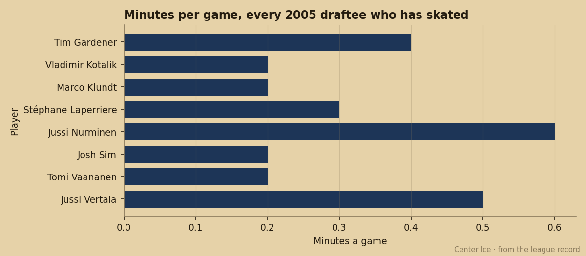
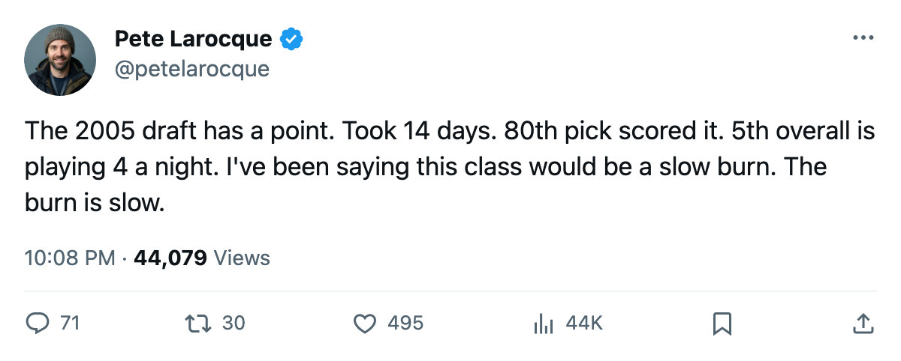
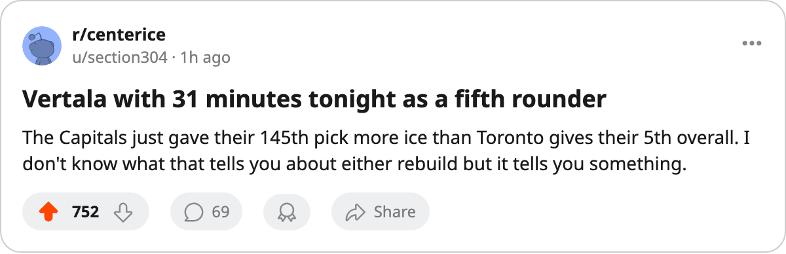

TOR
TORThe 2005 Draft's First Point Came From Pick 80. The Most Ice Went To Pick 145.
Fourteen days in, the class has 1 point across 14 games played. The 5th overall has 4.4 minutes a night.
 Pete LarocqueScouting editor · The Prospect File
Pete LarocqueScouting editor · The Prospect FileStéphane Laperriere73 scored the 2005 draft class's first point on a night when nobody was watching. He's the 80th pick, a 3rd-round right winger at  Boston Bruins, and he logged 16.0 minutes in one game. That goal is the entire output of a class that has had 14 days of regular season.
Boston Bruins, and he logged 16.0 minutes in one game. That goal is the entire output of a class that has had 14 days of regular season.
Eight players from the 2005 draft have seen the ice. They have combined for 1 point. The most minutes a single 2005 pick has logged in a game belongs to Jussi Vertala74, pick 145, 5th round, at  Washington Capitals: 31.0 minutes in one appearance. Tim Gardener75, the 5th overall, has played 5 games at 4.4 minutes a night.
Washington Capitals: 31.0 minutes in one appearance. Tim Gardener75, the 5th overall, has played 5 games at 4.4 minutes a night.

In this class the high picks play less than the low ones, and the gap is getting wider. The 5th overall sits at the bottom of the per-game minutes chart among players who've appeared in more than 2 games. Jussi Nurminen69, pick 102 out of the 4th round at  New York Rangers, has averaged 11.0 in 3 games. Gardener can't crack 5.
New York Rangers, has averaged 11.0 in 3 games. Gardener can't crack 5.
The first round hasn't started
Seventeen first-rounders from June are on record. One has played: Gardener. Two are unsigned, including Petr Beier at #8 with a 99 potential grade. The other 14 are scratched.
The 14 scratched first-rounders carry a range of current overall grades from 56 (Lasse Eronen60, #27,  Dallas Stars) up to 77 (Francois Anderson78, #11,
Dallas Stars) up to 77 (Francois Anderson78, #11,  Buffalo Sabres). Anderson has the best current grade of any first-rounder in this class. He's a goaltender who has watched from the bench all season.
Buffalo Sabres). Anderson has the best current grade of any first-rounder in this class. He's a goaltender who has watched from the bench all season.
The highest-potential first-rounder who's been dressed is Gardener at 98. The second-highest is Leo Atonovich61 at 96 (pick 13,  Atlanta Thrashers). Atonovich is scratched.
Atlanta Thrashers). Atonovich is scratched.
The unsigned problem deepens
Six players from the 2005 draft have no team. They include Beier (#8, potential 99), Marcel Smrek (#123, potential 85), and Leo Glebov (#38, potential 74). The two highest-potential men from this draft, Beier and Petri Makiaho66 (also 99, #89,  New Jersey Devils), are both stuck, differently: Beier unsigned entirely, Makiaho on the Devils' roster but never dressed.
New Jersey Devils), are both stuck, differently: Beier unsigned entirely, Makiaho on the Devils' roster but never dressed.
The class goes to pick 145. Eight men have skated in a game, and one has scored.
Reading the class
This mirrors 2004 at the same point in its life. The class that managed only 3 points through its first month (Kovalchuk's draft, the 2001 class, was the exception) saw its production come from mid-rounds and late-rounds long before the first-rounders contributed. What made the 2001 class fast was that its first 3 picks were all NHL-caliber on arrival. The 2005 class's first round grades out lower: the best overall among first-rounders is Anderson at 77, and the average sits in the low 60s.
Vertala is 20, a 5th-rounder, and Washington Capitals is giving him the ice time of a top-four defenseman. The Capitals are 0-0-2 through 2 games. A rebuilding club playing its 145th pick 31 minutes a night has a hole on the blue line.
The 2005 class has a long season to prove it can score. So far, mostly late-rounders play for it, and the 5th overall picks up a stick for 4 minutes a game.

